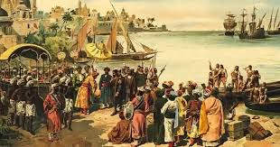

SST
5 Motivation why people travel to india in ancient times
- India was known as the "Golden Sparrow" for its abundant wealth and resources. It was famous for its spices, textiles, gems, and other luxury goods.
- India’s vibrant culture, encompassing music, art, and literature, drew visitors. Greek emissaries like Megasthenes recorded India’s customs and governance in works like Indica. Cultural interactions enriched civilizations on both ends.
- India, as the birthplace of religions like Hinduism, Buddhism, and Jainism, was a spiritual destination. Chinese pilgrims like Xuanzang and Faxian traveled to India to visit sacred Buddhist sites such as Bodh Gaya and Nalanda.
- India’s ancient universities like Nalanda, Takshashila, and Vikramashila were hubs of intellectual activity. Scholars from China, Tibet, and Persia came to study subjects ranging from medicine to astronomy.
- Invaders and explorers sought India for its wealth and strategic location. Alexander the Great’s campaigns expanded into India, marking a significant historical encounter between the Greeks and Indian civilizations.

People who travelled in ancient times
Hiuen Tsang, also known as Xuanzang, was a Chinese Buddhist, monk scholar, traveller, and translator. He travelled from China to India to obtain Buddhist scriptures during the reign of King Harsha Vardhan. He is best known for his journey to India from 629 to 645 CE and his efforts to bring over 657 Indian texts into China. His translations of some contemporary texts provide valuable insights into India's history, culture, and religion at the time. Hiuen Tsang is also revered in China as a great scholar who helped establish the field of Buddhist studies. His writings had a significant impact on the development of Buddhism in China.
Routes used to reach India
Overland Routes
- Silk route: A vast network of trade routes connecting India to Central Asia, China, and Europe. Goods like spices, silk, and precious stones were transported through this route.
- Khyber Pass and Bolan Pass: These mountain passes, located in present-day Afghanistan and Pakistan, provided vital access for traders, invaders, and pilgrims entering India from Persia and Central Asia.
- Caravan Routes: Overland trails through the Thar Desert connected India to regions like Arabia and Mesopotamia.
Maritime Routes
- Bay of Bengal Routes: These routes linked Indian ports to Southeast Asia (modern-day Thailand, Indonesia, and Malaysia). Maritime trade flourished with the export of spices, textiles, and pearls.
- Indian Ocean Networks: The larger Indian Ocean trade connected India with Africa, the Middle East, and Southeast Asia, facilitating cultural and economic exchanges.
- Arabian Sea Routes: Ships sailed between India and regions such as West Asia, East Africa, and the Roman Empire. Monsoon winds helped navigate these routes efficiently. Key Indian ports included Lothal (Indus Valley Civilization), Bharuch, and Calicut.
Geographic Features
- India’s location between East and West made it a natural hub for overland and maritime trade. It acted as a bridge between Asia, Europe, and Africa.
- Peninsular Shape and Coastline
India’s long coastline provided ample access to the sea, with natural harbors for ships.
Coastal regions like Gujarat, Kerala, and Tamil Nadu became major centers of maritime trade .
- Major rivers like the Ganges, Indus, and Godavari served as inland transport routes.
The Indo-Gangetic plains offered fertile lands that supported agriculture and sustained large populations, making India a prosperous region.
- Mountain Passes
the Himalayas to the north provided natural protection while passes like the Khyber Pass allowed controlled entry for trade and cultural exchange .
-
Seasonal monsoon winds facilitated predictable sea voyages across the Arabian Sea and Bay of Bengal, enabling efficient maritime trade.
Travel route of xuanzang
Click here to go home
By Vipeksh 6B33
Thank You!!!